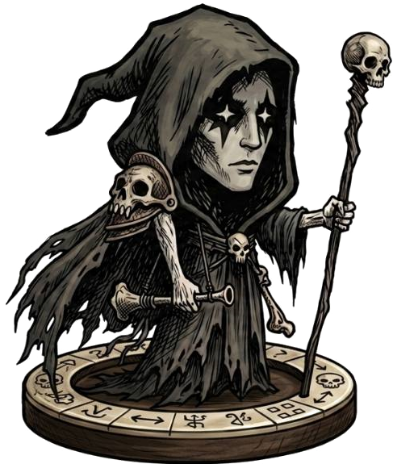
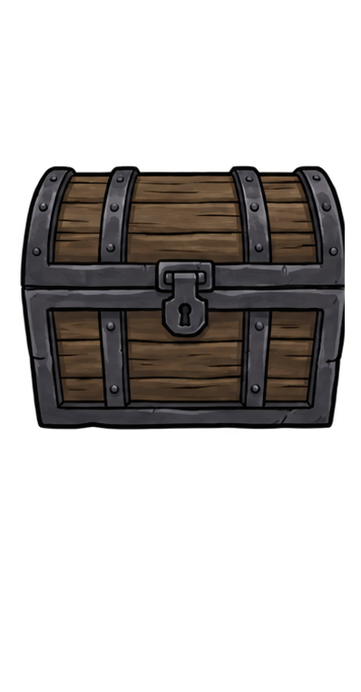

마물 정보
- 등급
- -
- 군단
- -
- 체력
- -
- 공격력
- -
- 속도
- -


현재 경로 타일을 고른 뒤 이쪽 타일을 누르면 서로 교체됩니다.
현재 경로에서 바꿀 타일을 선택하세요.

현재 맵의 남은 마물 타일을 한눈에 확인합니다. 정찰은 적 전체를 미리 확정하지 않고, 적 수와 확인된 등급·군단 흔적만 기록합니다.
전투에서 죽은 내 마물의 시체만 남습니다. 시체 1구를 선택하고 그 마물이 지녔던 낙인 1개를 추출하면 시체는 사라집니다.
내 마물 카드를 상판 왼쪽 거래칸에 올리면, 상인이 오른쪽에 교환품을 펼쳐 놓습니다. 제안 중 1개를 고르면 거래가 확정됩니다.
재료 카드를 선택하세요
마물 카드 0 / 4